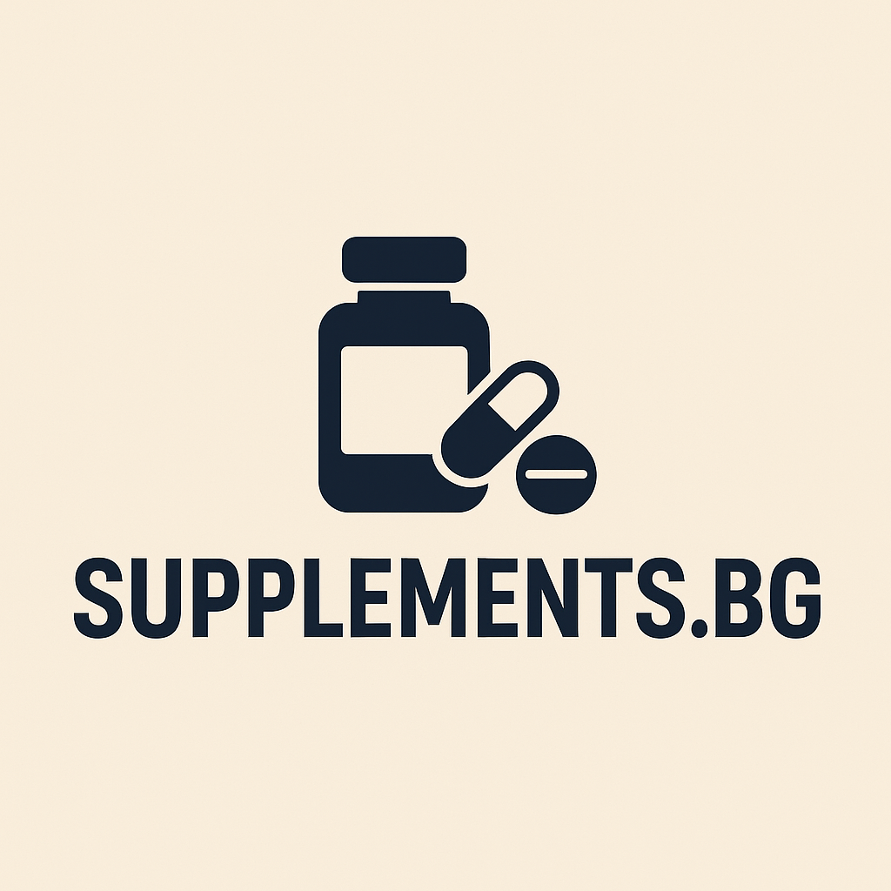

Добре дошли в Supplements.bg
Тук ще откриете точна и достъпна информация за хранителните добавки, тяхното приложение, ползи и рискове.
Основни категории

Кратки препоръки
- Започни с оценка на диетата — добавките допълват, а не заменят храната.
- Проверявай етикета, състава и дозировката.
- Консултирай се с лекар при хронични заболявания или лекарства.
Бързи факти
- Протеин
- Оптимален дневен прием за силово трениращи е 1.6–2.2 г/кг телесно тегло.
- Креатин
- Ефективен при 3–5 г дневно; повишава сила и мускулна маса.